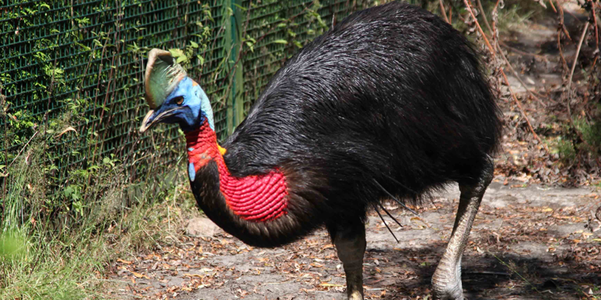

Northern Cassowary
AKA: Gold-necked cassowary, Single-wattled cassowary. Scientific Name: Casuarius unappendiculatus Family: Casuariidae Species: C. unappendiculatus Speed: 50 km/h Length: 149 cm Mass: Male: 30 – 37 kg Female: 58 kg Wing Span: 150 cm Life Span:40 – 60 years Location: Northern and western New Guinea, the islands of Yapen, Salawati, and Batanta. Diet: Fruits and small animals.
Appearance:
Blue facial skin, stiff black plumage and a casque on the head. It has a yellow or red colored wattle and neck. The feet are huge with a dagger-like claw on inner toe.
Facts:
- It is a flightless bird.
- As with other cassowaries, it is a shy bird.
- The local people use it as a gift in ceremonies.
- The feathers are used as decoration and bones are used as tools.